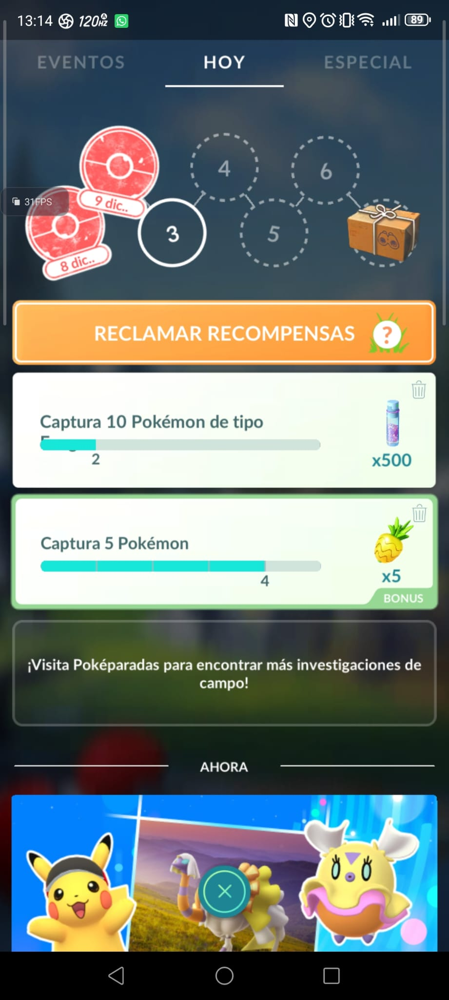
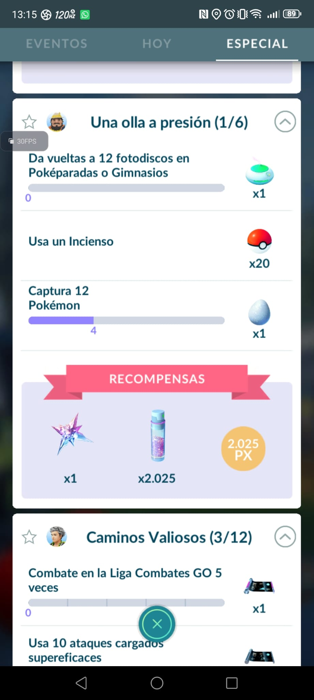
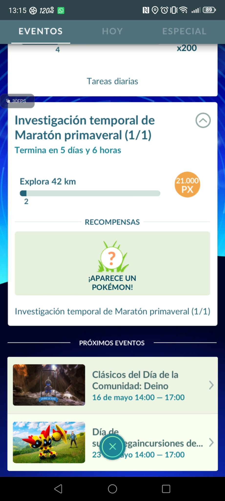

Investigaciones
Las investigaciones en Pokémon Go se dividen en investigaciones de campo, investigaciones especiales e investigaciones de evento. Estas investigaciones tienen diferentes recompensas y son diferentes en cuanto a la duración de cada una.
Investigaciones de campo
Las investigaciones de campo se realizan de manera diaria y se consigue una por cada Poképarada, teniendo diferentes recompensas como polvos estelares, megaenergía de algún Pokémon, Pokeballs o algún Pokémon y las misiones suelen ser sencillas y se pueden hacer en menos de un día.
Después de completar misiones por 7 días, los cuales no necesitan ser seguidos, ganaras una caja donde te dan Pokeballs, polvos estelares y un Pokémon especial que a veces puede ser legendario o uno que solo se podía conseguir de esa forma antes.
Además de las dos cosas anteriores también ponen investigaciones de campo en cada evento, ya sea Comunity Day o evento de cierto tipo en especifico, esas investigaciones suelen ser para conseguir Pokémon raros que tienen que ver con el evento en curso.

Investigaciones especiales
Las investigaciones especiales son investigaciones que van por partes, las partes se dividen en 3 misiones cada una y cada misión da una recompensa, parecido a las campo, después de completar esas tres misiones reclamas otras recompensas por superar esa parte y sigues con la siguiente.
Estas investigaciones suelen ser para capturar Pokémon singulares o Pokémon especiales de varios eventos como spiritomb en evento de Halloween, en cuanto a los Pokémon singulares que se pueden conseguir mediante estas investigaciones suelen ser misiones que puedes tardar bastante en completar dependiendo del lugar donde vivas o donde juegues pero todas se pueden completar en cualquier sitio.

Investigaciones de evento
Las investigaciones de evento suelen ser investigaciones que duran lo que dura un evento, es decir, suelen durar entre 5 o 14 días dependiendo de la duración del evento y estas investigaciones tienen una dificultad adecuada respecto al tiempo de duración del evento.
Respecto a las recompensas estas son iguales a las investigaciones de campo solamente que siempre suelen dar un Pokémon con tematica del evento que hay en ese momento
